小学教学质量监测项目实验测试数学学科报告 [1]
一、概况
1994-1995年学年末，国家教委与联合国儿童基金会对参加“制定小学语文、数学学习标准及建立教学质量监测机制”项目的实验学校的语文、数学进行了一次教育质量监测。宁夏回族自治区银南地区的吴忠市、青铜峡市、灵武县、盐池县的95所学校、497个班级、13564名学生参加了五年制小学数学的测试。
这次数学测试是一次水平测试，将了解我区不同地域（城镇、农村、川区、山区）、不同年级（1～5年级）、不同性别（男生、女生）、不同民族（回族、汉族）及独生子女与非独生子女对数学学习标准中的各项指标的完成情况，以检验已制定的小学数学学习标准的指标和要求的科学性和可行性，并从中总结经验，为改进小学教育质量，建立教学质量监测机制及提高教育质量监控能力提供科学的依据和指导。
这次测试命题的根据是《九年义务教育全日制小学数学教学大纲》（以下简称《大纲》）中对各年级数学内容的规定和基本要求，以及国家教委、联合国儿童基金会发布供项目学校实验用的《九年义务教育全日制小学数学学习标准》（以下简称《学习标准》）。各年级测试题均为60题，题目覆盖面广，且突出教学重点，通过测试，能客观地反映出小学数学教学质量的现实。
这次测试的组织，各年级严格按照监测指导的要求进行，评卷一律以评卷说明和标准答案为准。测试统计，根据各年级的测试题，有相应的统计表。最后将全部数据输入微机，进行统计处理，为分析提供依据。
这次数学测查在统计时采用了以下几个统计项：
（1）数学测查结果统计（见表3-1）；
（2）数学测查总分台阶分布统计（见表3-2）；
（3）各县数学测查结果统计（见表3-3）；
（4）数学知识分项测查统计（见表3-4）；
（5）数学能力分项测查统计（见表3-5）；
（6）城镇学校与农村学校测查统计（见表3-6）；
（7）男生、女生测查统计（见表3-7）；
（8）独生子女与非独生子女测查情况统计（见表3-8）。
二、数学测查总体情况
（一）数学测查结果与分析
数学测查结果，是小学生数学学习情况的反映。为了便于统计和比较，统计时采用了当地常规统计项：1.平均分——反映学生学习情况的整体水平；2.标准差——反映以平均数为基点的分散程度（标准差越大，数据越分散；反之，则数据越集中）；3.合格率——采用百分制记分法，把60分定为合格线，合格线以上人数除以总人数之比为合格率（用百分数表示）。数学测查结果统计如下：
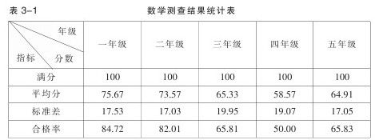
从表3-1明显看出：
（1）低年级合格率较高，这是比较正常的，也符合数学教学的实际。
（2）四年级合格率仅50%，其原因是：①教材分量偏重，且概念集中、抽象，对概括、分析、综合能力要求高，学生不易理解和接受；②教师素质较差，一般骨干教师都分别把关—一年级基础关，五年级毕业关，三年级过渡关，其余教师安排在二、四年级；③一些学校办学条件、教学设备较差，有的甚至连最基本的教具如直尺、三角板都没有，教师讲多边形的面积、长方体和正方体、分数的意义等，无法演示，这样就很难达到教学的基本要求；④九年义务教育教材大面积的使用推广才到三年级，四年级使用的是实验教材或统编教材，这些教材与九年义务教育的指导思想、九年义务教育教材的编排特点及教法都有区别，有些教师还不能适应。这次又是用九年义务教材的试题测查，这对四年级教学成绩是有一定影响的。
（二）数学测查成绩分布统计与分析
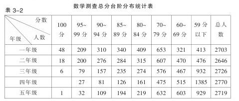
从表3-2可以看出：
1.低年级学生高分段的人数较多，尤其是一年级的学生90分以上人数占总人数的20.9%，绝大多数学生达到了《大纲》规定的教学基本要求。
2.从一——四年级不及格人数的递增态势来看，与义务教育“小学数学教学必须面向全体学生，使绝大数学生经过努力都达到基本要求”是相背离的。因此必须引起高度重视，及早采取有力措施，把不及格人数控制到最低限度。
3.鉴于四年级的教学现状，毕业班完成小学阶段的教学任务并非轻而易举。
（三）各县数学测查结果
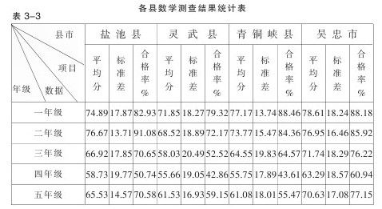
从表3-3可以看出：
1.吴忠市一至年级数学测查平均分高于其他三县市。一是因为吴忠市是银南地区政治、经济、文化的中心，人们对教育的重视程度高。二是为了便于比较城镇学校与农村学校教学水平，吴忠市选择了四所城镇学校列为项目实验校。
2.从四县市三项统计项目（平均分、标准差、合格率）看，无明显的山区、川区地域差异，整体水平比较接近。
三、分项测查统计与分析
纵观这次数学测试，其内容包括七个领域的知识，即：数与计算、量与计量、几何初步知识、代数初步知识、统计初步知识、比和比例、应用题；分为四种数学能力：计算能力、初步的逻辑思维能力、空间观念和运用所学知识解决简单的实际问题的能力。为了寻找差距、弥补不足和改进教学，下面就分年级按数学知识和数学能力分项进行统计与分析。
（一）数学知识分项统计与分析
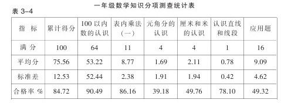
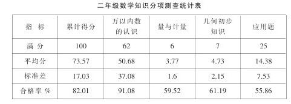
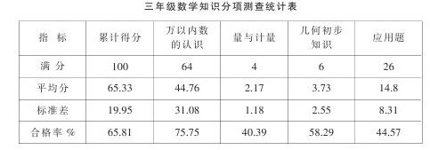
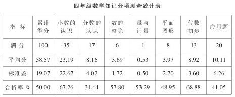
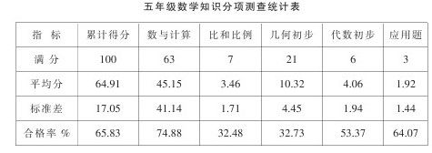
表3-4反映了各年级数学知识测查结果，对照《大纲》的要求和《学习标准》，现按知识系统简要分析如下：
1.数与计算
这一部分内容是各年级测试的重点。其题量与类型见下表：
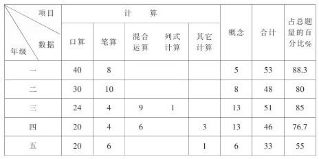
从试题的编制来看，符合各级数与计算的要求，从试题的类型来看，突出了口算。但与《学习标准》中的量化指标对照，差距较大。各年级计算达标率（达到标准数占该题总数的百分比）见下表；
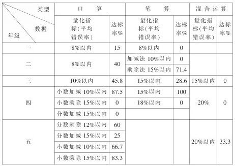
分析差距较大的原因，从客观上讲：
（1）这次测试是放了包袱的—不加重教师、学生的负担，如实反映教学质量的现状。
（2）这次测试组织、试卷印制均与以前不同，学生还不适应。
2.量与计量
有关量与计量的试题各年级安排见下表：
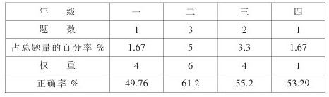
从正确率来看，都偏低，一是有些学生对重量、长度、面积的概念不清，不能正确填出合适的单位，如：小明身高143（）；一袋面粉重25（）；课桌面的面积大约为50（）。二是学生缺乏感知，不能正确解答生活中一些简单实际问题。三是量与计量，采用我国法定计量单位后，与当地实用习惯不一致，学生有概念误差，如千克和斤等。
3.几何初步知识
小学阶段学习几何初步知识，主要是通过直观认识常见的简单几何形体的特征，学会计算它们的周长、面积和体积。各年级在测试中的题量分布、权重见下表：
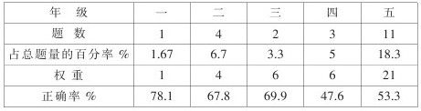
从上表可以看出，由于低年级注重测量、拼摆、画图等实际操作方面的训练，正确率较高；而高年级由于抽象程度高，加之要进行简单应用，因此正确率较低。另外，教学手段落后，也不同程度地影响了几何初步知识教学。
4.代数初步知识
这部分知识在四年级所占比重较大，共设置了6道试题，除49题正确率较低（48.84%），其余都在60%以上；五年级设置了3道题，从正确率来看学生掌握得较好。
5.统计初步知识
统计初步知识在五年级设置了一道题；根据已有统计表的数据制折线统计图。正确率为64.07%，说明学生能看懂简单的统计表，掌握了简单的统计图的绘制方法。
6.比和比例
这部分知识五年级试题中有5道题，占总题量的8.3%，从答题情况来看，学生基本理解了比、比例的意义、性质，会进行简单的应用。
7.应用题
应用题是一个知识点，但反映的是学生运用所学知识解决简单的实际问题的能力，因此列在解决问题的能力方面进行分析。
（二）数学能力分项统计与分析
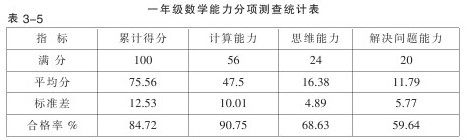
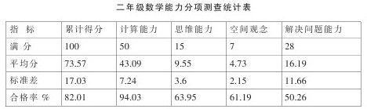
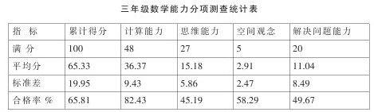
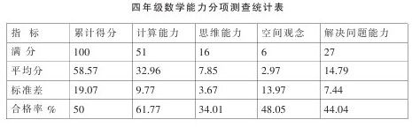
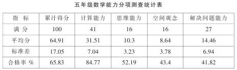
表3-5中的数据反映了各年级数学能力测查结果，《学习标准》中数学能力无量化指标，因此只能根据合格率对各分项测查结果做分析。
1.计算能力
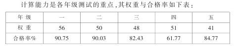
从表中明显看出四年级合格率较低，这因为四年级认数范围扩展了，开始系统学习小数、分数。小数的系统学习是在学生熟练地掌握整数四则运算的基础上进行的，小数和整数的联系密切，九年义务教育教材又注重让学生在已有知识的基础上通过类推、迁移学习新知识，如果学生在这方面能力较差，就直接影响了计算结果。分数的系统学习，概念又比较多，如果哪一个知识点掌握得不好，也同样影响计算效果。另外，九年义务教育教材加强了四、五年级口算，而有些老师却认为这是低年级的重点，因此有所忽视。其他年级从合格率来看，还比较高，但达标率低，关键还是方法不够灵活、合理。这就要求每位教师在计算教学时必须加强学法指导和计算的基本功训练，否则就很难达到正确、迅速的目标。
2.初步的逻辑思维能力
九年义务教育教材十分重视发展智力，培养能力，各年级权重与合格率如下表：
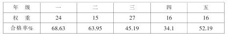
从表中反映的数据来看，学生的初步的逻辑思维能力较差。从答题情况看，主要是很多同学数学概念不清，不能正确地进行判断、推理。因此，各年级必须加强初步逻辑能力的培养和训练，要有意识地结合教学内容进行，要创设教学情景，让学生多种感官参加教学活动，鼓励学生质疑问难，养成良好的独立思考问题的习惯，只要教师重视，并且引导得法，学生的思维能力一定能得到提高。
3.空间观念
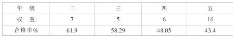
这部分知识对于培养学生初步的空间观念和进一步学习几何都是有益的，然而合格率较低，主要失分在概念和作图上。因此要加强测量、拼摆、画图等实际操作方面的训练，使学生切实掌握形体的基本特征和面积、体积的计算方法，以培养学生初步的空间观念。
4.解决问题能力
应用题历来是小学数学教材的重点和难点。《大纲》指出：“应用题教学是培养学生解决简单的实际问题和发展思维的一个重要方面”。尽管老师对应用题教学比较重视，但成效不显著。如下表所示：
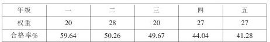
从表中看出：随着年级的增高，合格率在逐步下降，反映了学生解决简单的实际问题的能力较差。这很不适应素质教育的要求。从试题本身来看，都是联系学生生活实际的，都体现了义务教育对各年级学生应具备的解决简单问题能力的基本要求。就拿各年级的（60）题来说，只要学生认真审题，会分析数量关系，排除无关因素（多余条件等）的干扰，使能正确进行解答的，但一～五年级正确率相当低，他们分别是26.27%、34.66%、28.8%、35.7%和10.04%。因此，在应用题教学中，必须重视应用题的结构分析和训练，要让学生多动脑，多探索，发现规律，扩展思路，主动获取知识，逐步培养和提高学生解决实际问题的能力。同时还要注重后进学生的辅导，否则，对正确率影响会更大。
四、相关因素的比较
（一）城镇学校与农村学校的比较
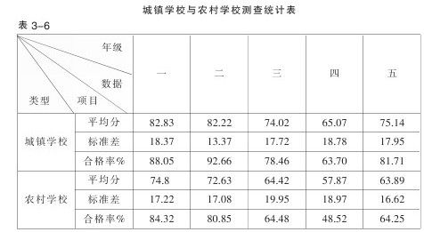
从表3-6可以看出，城镇学校与农村学校有明显差异，差异最大的是五年级，平均分相差11.25分，差异最小的是四年级，平均分相差7.2分，这是符合我区教学实际的。因为城镇学校与农村学校在师资配备、教学条件、设备、家庭影响等方面的差别对教学成绩是有影响的，这种差异是正常的。
（二）男、女的比较
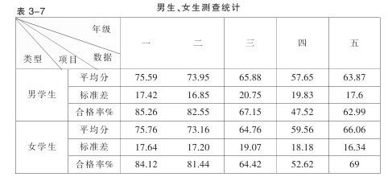
从表3-7可以看出：在小学阶段，各年级男、女学生在学习成绩上无明显差异。
（三）回、汉族学生的比较
此项比较、分析略。
（四）独生子女与非独生子女的比较
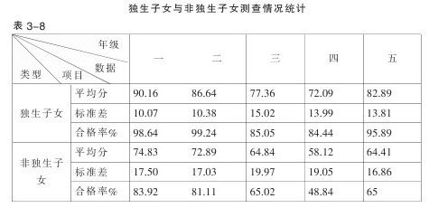
从表3-8明显看出：独生子女与非独生子女数学学习成绩差距较大，各年级平均分相差15分左右，五年级平均分达到18.74分。这是因为独生子女大多数都生活在城镇，城镇学校与农村学校已有明显差距，另外，独生子女在家庭所处地位、待遇、教养非同一般，充分体现了优生优育的效果。看来提高人的素质，这是一个重要的途径。
五、结论
（一）对《学习标准》的评价和建议
1.评价
（1）《学习标准》是《大纲》的具体化，体现了九年义务教育阶段小学数学教学的指导思想，利于教师理解《大纲》的精神，利于教师在教学中落实培养目标，完成教学的各项任务；《学习标准》采用表格式进行编制，突出了教材的知识结构系统及各部分之间的内在联系，利于教师掌握各阶段教学内容；《学习标准》要求具体，凡能量化的尽量给出了量化指标，具有可操作性、可检测性，利于教育行政部门、学校、教师对小学数学教学质量进行监测和评价，也利于学生对自己学习水平的自测。由此可见，《学习标准》是由小学数学教学的目标系统、教材的知识结构系统、质量监测系统及评价系统组成的一个有机整体，其导向性明确，深受广大师生的欢迎。
（2）《学习标准》对计算速度提出了明确要求，对计算与应用题错误率进行控制，给出了量化指标，这是教学水平的基本要求。教师只要领会了教材的编写意图，按照儿童的认知规律组织教学，这个基本要求是可以达到的，不宜再降低要求。《学习标准》对数学能力的要求已用着重号标明，应引起教师们的重视，以便在教学过程中有意识地进行培养和训练。
（3）《学习标准》适于我区推广和实用。尽管我区实验校小学数学测查结果与《学习标准》中的要求有一定的差距，但这个原因不在《学习标准》的制定和要求方面，而在于我区尚未形成全社会尊师重教的社会氛围，教学管理没有规范化，教师素质较差，教学手段落后等方面。
2.建议
（1）《学习标准》应分学期制定，和各学期教材同步。
（2）《学习标准》应分单元提出教学要求，这样更利于教师进行教学质量的监测和调控，及时查漏补缺。
（3）应有明确的监测手段、监测时机、监测内容，使教学质量监测与评价逐步常规化、序列化。
（二）我区实验项目学校学生数学学习质量评价
1.从测查的总体来看，我区小学数学教学质量与《学习标准》要求有一定的差距，也反映了我区与其他省区的差距。对此不能等闲视之，应加强宏观调控，采取有效措施，逐步缩小这种差距。
2.从分项测查统计来看，数与计算掌握较好，计算能力的合格率优于其他几项能力，用所学知识解决简单的实际问题能力较差。主要原因是：小学教师受传统的“重知识，轻能力”的教学指导思想影响较深；对九年义务教育的指导思想、培养目标及教学要求认识不足。
3.从相关因素的比较来看，城市学校优于农村学校，独生子女优于非独生子女，这符合我区小学教育的实际情况。
根据以上评价，对今后小学数学教学的建议是：
1.小学数学是九年义务教育的一门主要学科，其教学水平尚未达到义务教育大纲中的基本要求，如果不努力解决这一问题，普及义务教育的任务就难以完成。因此，必须引起高度重视，要有紧迫感，要采取有效措施，如强化教学管理，增加教育的投入，改善办学条件，增添必要的教学教具、学具，购买必要的教师教学用书及其他图书期刊等，争取达到《大纲》规定的基本要求。
2.要加强教师培训工作，努力提高小学数学教师的素质。目前，教师的学历达标已基本解决，不断提高数学教师的教学能力已是当务之急。要重视青年骨干教师的培养，抓典型，促全面，逐步建成一支适应新形势、具有良好素质的教师队伍，以完成素质教育的任务，多出人才，出好人才。
3.要深入开展教研活动，积极探讨国内外先进的教学思想、教学方法和教学手段，更新教学观念，潜心钻研教材，研究教法，促进教师教学水平的提高，领导要身先士卒，成为管理和指导教学的内行。
4.要重视教学资料的订购，开阔视野，扩大信息量，提高教师的理论水平、真正掌握教学的主动权。
5.要建立教学质量监测机制，随时对教学质量进行监控，以促进课堂教学效率的提高，力求当堂教学任务当堂完成。教育行政和教研部门对教学质量监测不仅要重视形成性测查和终结性测查，更要重视平时课堂教学质量的测查，要防患于未然。